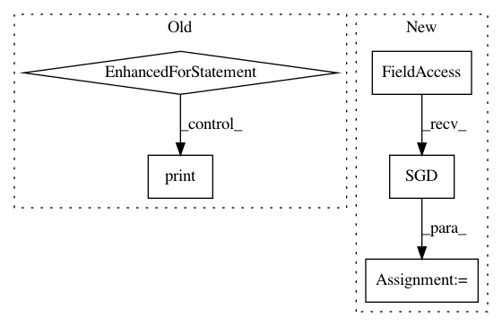

3128e13109c8766eafb413f2428bba976701e929,beginner_source/transformer_tutorial.py,,,#,295
Before Change
epochs = 3 // The number of epochs
best_model = None
for epoch in range(1, epochs + 1):
epoch_start_time = time.time()
train()
val_loss = evaluate(model, val_data)
print("-" * 89)
print("| end of epoch {:3d} | time: {:5.2f}s | valid loss {:5.2f} | "
"valid ppl {:8.2f}".format(epoch, (time.time() - epoch_start_time),
val_loss, math.exp(val_loss)))
print("-" * 89)
if val_loss < best_val_loss:
best_val_loss = val_loss
best_model = model
scheduler.step()
////////////////////////////////////////////////////////////////////////////////////////////////////////////////////////////////////////////
// Evaluate the model with the test dataset
// -------------------------------------
//
// Apply the best model to check the result with the test dataset.
test_loss = evaluate(best_model, test_data)
print("=" * 89)
print("| End of training | test loss {:5.2f} | test ppl {:8.2f}".format(
test_loss, math.exp(test_loss)))
After Change
criterion = nn.CrossEntropyLoss()
lr = 5.0 // learning rate
optimizer = torch.optim.SGD(model.parameters(), lr=lr)
scheduler = torch.optim.lr_scheduler.StepLR(optimizer, 1.0, gamma=0.95)
import time
def train():
In pattern: SUPERPATTERN
Frequency: 3
Non-data size: 5
Instances
Project Name: pytorch/tutorials
Commit Name: 3128e13109c8766eafb413f2428bba976701e929
Time: 2020-12-02
Author: 6156351+zhangguanheng66@users.noreply.github.com
File Name: beginner_source/transformer_tutorial.py
Class Name:
Method Name:
Project Name: pyprob/pyprob
Commit Name: 9cf91d62a1705c3837eea652c985fa0e49f8eb24
Time: 2017-04-04
Author: atilimgunes.baydin@gmail.com
File Name: compile.py
Class Name:
Method Name:
Project Name: pytorch/tutorials
Commit Name: 3128e13109c8766eafb413f2428bba976701e929
Time: 2020-12-02
Author: 6156351+zhangguanheng66@users.noreply.github.com
File Name: beginner_source/transformer_tutorial.py
Class Name:
Method Name:
Project Name: jindongwang/transferlearning
Commit Name: 376b01c2e338ec63e638f62a76d67f6a9323e47c
Time: 2019-08-14
Author: jindongwang@outlook.com
File Name: code/deep/DeepCoral/DeepCoral.py
Class Name:
Method Name: